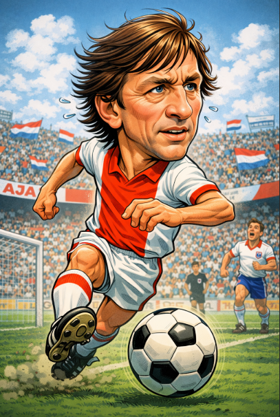

Johan Cruyff: el arquitecto del fútbol moderno
Inicios
Johan Cruyff nació en Ámsterdam, Países Bajos, y desde muy joven se formó en las divisiones inferiores del Ajax. Creció en un entorno donde el fútbol se entendía como inteligencia, movimiento y creatividad. Su talento no solo destacaba por la técnica, sino por su comprensión del juego desde temprana edad.
Trayectoria en clubes
- Ajax de Ámsterdam: Donde se convirtió en leyenda y dominó Europa.
- FC Barcelona: Ídolo como jugador y símbolo de una nueva filosofía.
- Los Angeles Aztecs: Su experiencia en el fútbol estadounidense.
- Levante UD y regreso al Ajax: El cierre de una carrera histórica.
Logros y reconocimientos
Cruyff acumuló títulos y distinciones que marcaron una era:
- 3 Balones de Oro (1971, 1973, 1974)
- 3 Copas de Europa con el Ajax
- Finalista del Mundial 1974 con Países Bajos
- Considerado el máximo exponente del “Fútbol Total”
Su influencia trascendió los resultados: cambió la manera de entender y enseñar el fútbol en todo el mundo.
Impacto económico y cultural
Johan Cruyff fue mucho más que un jugador. Su pensamiento revolucionó estructuras deportivas, especialmente en el FC Barcelona, donde sentó las bases del estilo que hoy identifica al club. Su legado cultural se refleja en generaciones de futbolistas y entrenadores.
Estilo de juego
Elegante, inteligente y creativo. Cruyff jugaba con la mente tanto como con los pies. Destacó por su visión, movilidad y capacidad para hacer jugar al equipo. No solo ejecutaba el fútbol: lo diseñaba.